data/level_plans/expedition_03/ 的模板契约生成，几何是
契约的纯函数（改 JSON → 重跑 → 几何跟着变）。三批产物共
10 房间 + 9 通道 + 5 门型。端口数不是写死的：从六张骨架的节点度数反推，NORMAL 取四选一池里的最大值；入口安全屋另 +1 弃局门。
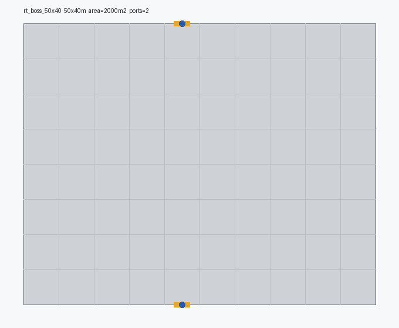
矩形
rt_boss_50x40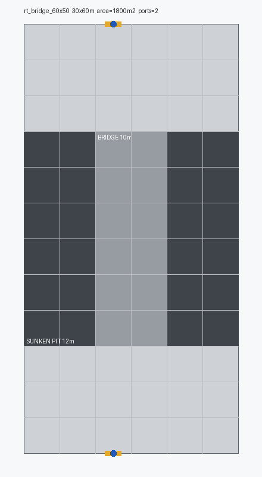
矩形
rt_bridge_60x50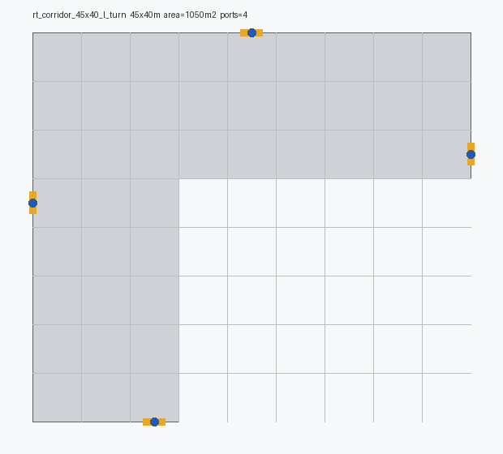
l_turn
45×40 m · 1050 m²
4 端口 · 40 件
非矩形轮廓
rt_corridor_45x40_l_turn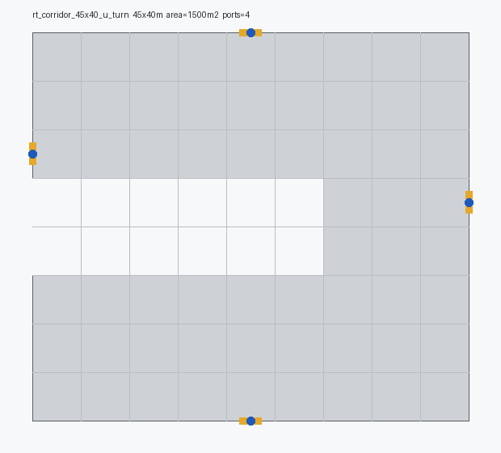
u_turn
45×40 m · 1500 m²
4 端口 · 54 件
非矩形轮廓
rt_corridor_45x40_u_turn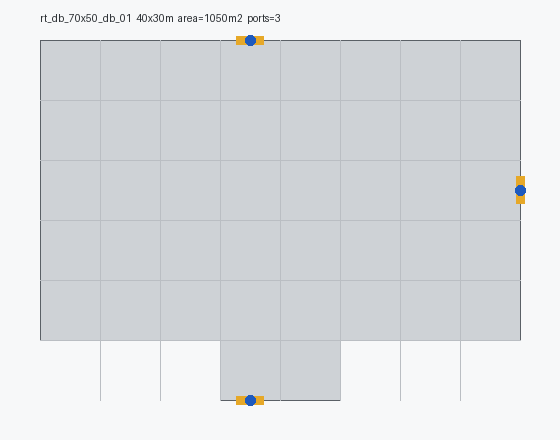
db_01
40×30 m · 1050 m²
3 端口 · 43 件
非矩形轮廓
rt_db_70x50_db_01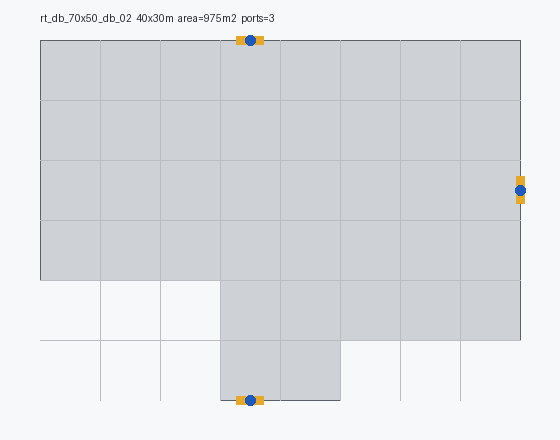
db_02
40×30 m · 975 m²
3 端口 · 40 件
非矩形轮廓
rt_db_70x50_db_02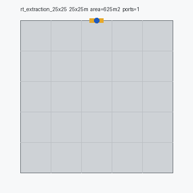
矩形
rt_extraction_25x25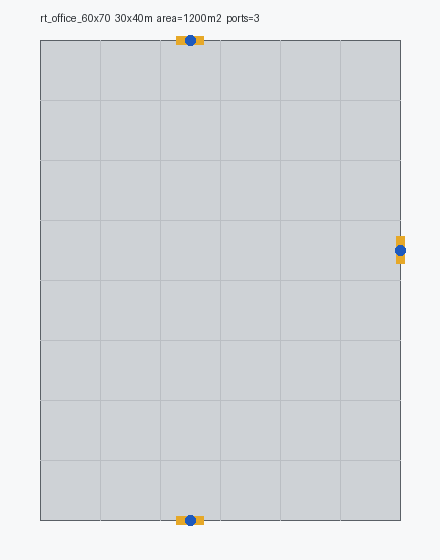
矩形
rt_office_60x70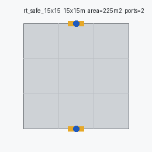
矩形
rt_safe_15x15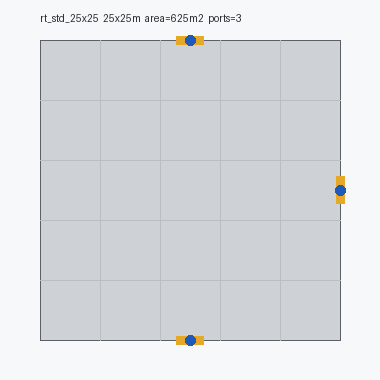
矩形
rt_std_25x25走廊就是一间很窄的房间，与房间同契约（5m 格、2.2m 门洞、同一套 lane 槽），不是独立的连接件类型；生成顺序上它排在最后，用来补已摆好房间之间的缝。
净宽取 5m 而非更窄：门洞 2.2m 必须居中落在 5m 槽位上，两侧各留 1.4m 墙肩，才能与房间侧槽位逐米对齐。3~4m 宽的通道会让门位脱离 5m 格线。
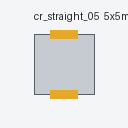
straight
cr_straight_05_static_layout.tscn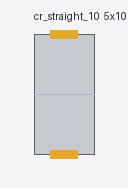
straight
cr_straight_10_static_layout.tscn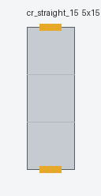
straight
cr_straight_15_static_layout.tscn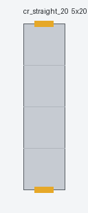
straight
cr_straight_20_static_layout.tscn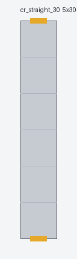
straight
cr_straight_30_static_layout.tscn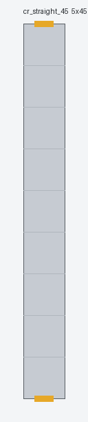
straight
cr_straight_45_static_layout.tscn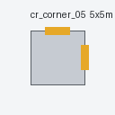
straight
cr_corner_05_static_layout.tscn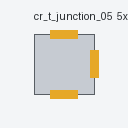
junction_3
cr_t_junction_05_static_layout.tscn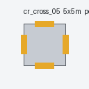
junction_4
cr_cross_05_static_layout.tscn门不在房间 TSCN 里 —— 房间只声明「这面能接」（ConnectionPorts），
门由运行时按策略落上去。加一种门只改门表，不动任何房间文件。
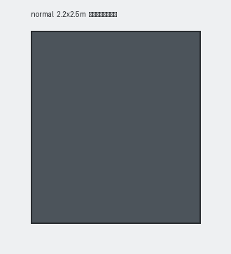
key=false · clear=true · triggers_fate=false
挺进地牢：玩家进房后门自动关上，清完怪再开
normal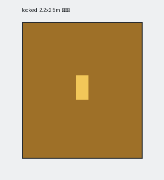
key=true · clear=false · triggers_fate=false
挺进地牢：需要消耗一把钥匙
locked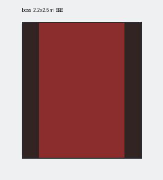
key=true · clear=true · triggers_fate=true
挺进地牢：首领房唯一入口，常闭且带仪式演出
boss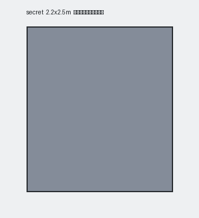
无开关语义（可打碎的墙）
挺进地牢：外观与墙无异，用爆炸或特定手段打碎后进入
secret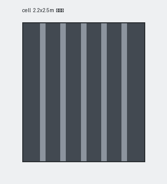
key=true · clear=false · triggers_fate=false
挺进地牢：本层出现牢房锁时，系统必定给某个敌人分配一把 Cell Key
cell